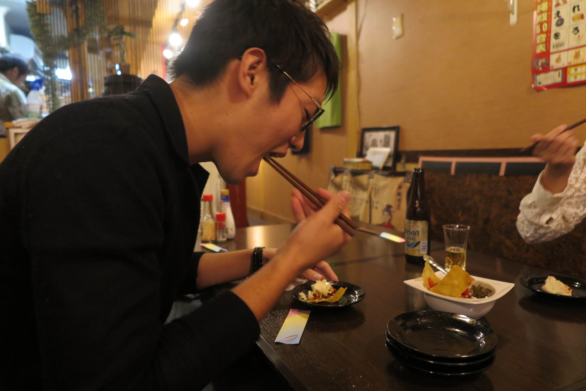
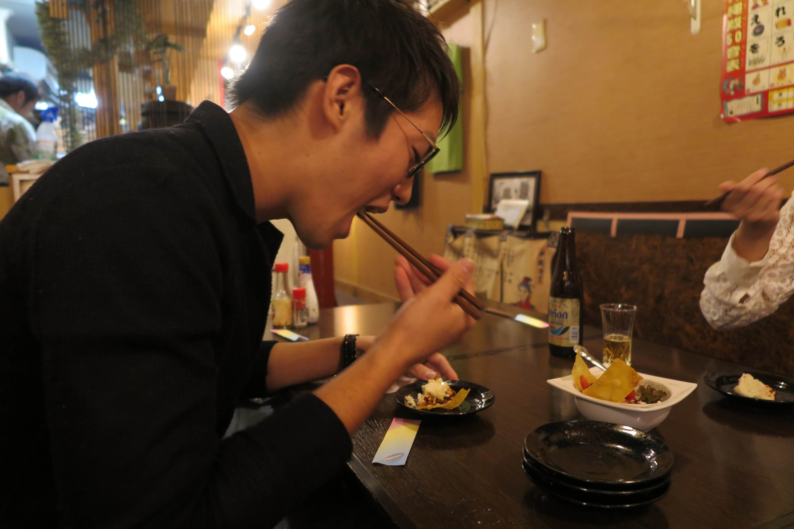
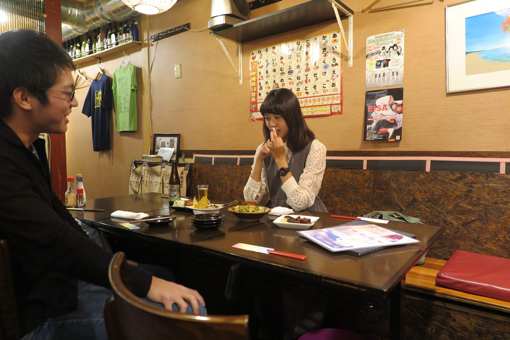
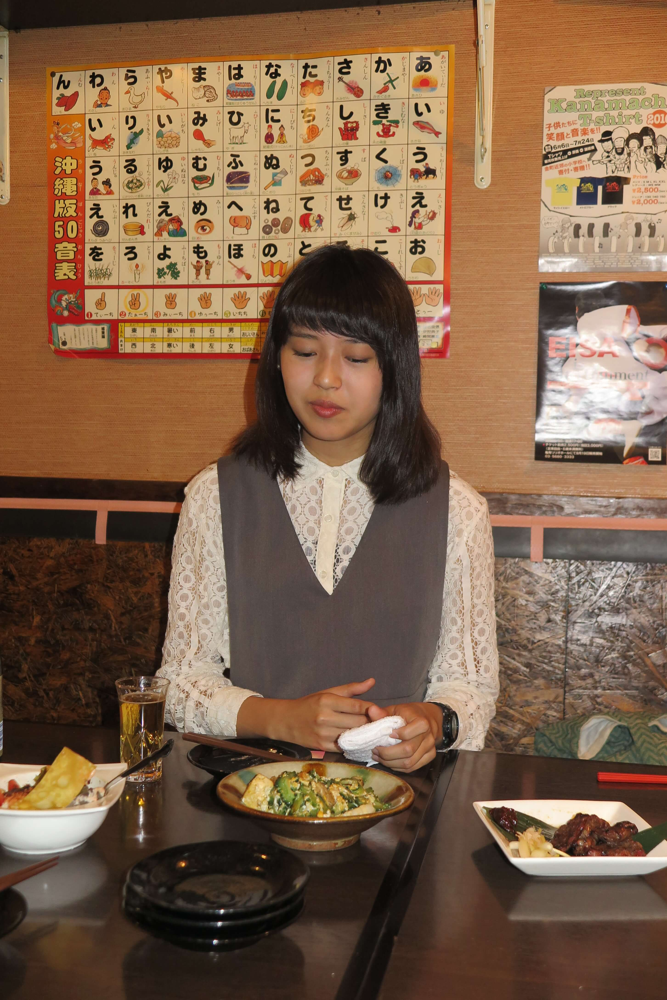

「たかみなさんの良さは何か」と考えまして…。顔合わせの時に「キャラクターがすごいなぁ」。Twitterを見ていても他の人は「可愛らしい」写真が多いのに、たかみなさんだけ「真顔」とか「外人イケメン4枚貯まった」とか自分の性格をどのように捉えているのかなと。
「たかみなさんの良さは何か」と考えまして…。顔合わせの時に「キャラクターがすごいなぁ」。Twitterを見ていても他の人は「可愛らしい」写真が多いのに、たかみなさんだけ「真顔」とか「外人イケメン4枚貯まった」とか自分の性格をどのように捉えているのかなと。
 ぶっっっ就活？？（ドリンク吹く）
ぶっっっ就活？？（ドリンク吹く）
＊私は一浪しているから、今同い年の子たちがみんな4年生で就活をしていて（意識するのだけど）、人事の人ってエントリーされたらその人の名前を検索するらしいのね。ミスコンに出た、っていうことも大きいけど、私の名前って今検索すれば出てくるじゃない？Twitterも「どういうことをつぶやいてるんだろう」って絶対に見られると思ったの。私は「可愛いかを4枚」よりはオモシロいものを出していった方がウケいいじゃない？絶対。山登りした、とかも。
 それは人事の人がおじさまだから可愛いのがいい、みたいな？
それは人事の人がおじさまだから可愛いのがいい、みたいな？
＊確かに可愛いのもいけるけど、受付とは違って理系の技術職ってなったら関係ないでしょ？山登りに行ったっていうのも、旅行に行ったっていうのも絶対ウケると思う。
 「真顔４枚」が就活ってことですね。
「真顔４枚」が就活ってことですね。
＊そう（笑）人事って「自分持ってます」っていうようなちょっと変わった子を集めるんだよ。そういうところを私はTwitterでガンガン出していってるから。
真顔4枚たまった！
よかったら投票お願いします😶https://t.co/lPE4mxjwl3 pic.twitter.com/6qYudBaWHC — 髙橋美奈海 ミス理科大 No.6 (@misstus2016_6) 2016年9月8日
 就活の話が出たので...どういう系の就職先とかは決めているんですか？
就活の話が出たので...どういう系の就職先とかは決めているんですか？
＊私は「構造材料」の材料系に行きたいのだけど、第一志望のところが院卒しか雇ってなくて...でもそこだったら私営業でもいいかなって思ってる。そこにめっちゃ入りたいの。院進学は考えていなくて、４年で就職するつもり。
 営業ですか。何かそれを考えるきっかけはあったんですか？
営業ですか。何かそれを考えるきっかけはあったんですか？
＊この夏にインターンに行って、かなり考えが変わったんだ。建築って激務なの。今はすごく伸びしろはあるけど、でもそれは仕事量も増えるってこと。インターンでそれを体験して「建築の仕事にこだわらなくてもいいかな」って思った。
 なるほど。
なるほど。
＊お金を稼げても使える時間がなかったら意味がないじゃん？そうしたら「土日休める」とかそっちの条件を重要視したいと思ったの。
 大手ゼネコンの平均寿命、65歳らしいですね。
大手ゼネコンの平均寿命、65歳らしいですね。
＊そうそう。だし離職率が50、60%とかザラ。皆大体3年目くらいで転職したりする。そういうところから考えると、私の志望しているところは離職率もすごく低いし、社員に対する福利厚生も手厚いし、すごくいいなぁって思った。
 

「ちゃんとこれ書いてくださいよ、たかみなさんによそってもらいましたよ！！」と高橋。（最小のテキスト)
 建築学科ってたくさん建物を見に行けって言われるじゃないですか、どこか行きましたか？
建築学科ってたくさん建物を見に行けって言われるじゃないですか、どこか行きましたか？
＊行った行った！前川國男とか丹下健三とか。丹下健三は好きかも。でも正直見て「おお〜」とはならないんだよね。
 僕もならないんですよ。一年生だからかな？みんな見て「興奮した」とか言うんですけど。
僕もならないんですよ。一年生だからかな？みんな見て「興奮した」とか言うんですけど。
＊本当に好きだったら相当興奮すると思うけど、私はどちらかというと建築的に「ザ・意匠」っていう建物よりも、もっと機能的な家に住みたいって思ちゃう人だから。「よくこんなの思いつくなぁ」とは思うけど、ね。

＊いいよ〜どんどん聞いて〜。
 いきます。「自分が『あ、ここ理科大生だな』って思う瞬間はありますか？」
いきます。「自分が『あ、ここ理科大生だな』って思う瞬間はありますか？」
＊え、いっぱいあるなぁ〜。アニメは全然見るし、チェックシャツも全然着る。
 暗いんですか。
暗いんですか。
＊吉田くん(ミスターNo.2)にもこの間言われたけど、結構大学で見かけるのに下向いてくら〜く歩いてるから声かけられないって。だから大学内で「応援してます」の声かけられたこともないし...。声かけられたら「ありがとうございます！」って言うつもりはあるけど、声をかけられたことがない。
 野郎どもの質問、下らないんですが...どんどんいきますね。「今まで何人に告白されましたか？」
野郎どもの質問、下らないんですが...どんどんいきますね。「今まで何人に告白されましたか？」
＊私ね、
・本当に？？？
＊いや、あるけど、あるんだけど（笑）告白まで持ってかせない。自分に好意持ってるなこの人、ってわかるじゃん？わからないフリする女の子いるけど。私は結構わかるし、私が「ナイな」って思っちゃったら
 言うんですか？直接？
言うんですか？直接？
＊直接じゃなくても、遠まわしでも言うかなぁ〜。
 なんとなーく雰囲気で疎遠にするとかでもなく？
なんとなーく雰囲気で疎遠にするとかでもなく？
＊とかもあるけど、2人でどこかに行くスキとかを作らせなかったり。
 苦労してらっしゃいますね...。
苦労してらっしゃいますね...。
＊いや苦労はしてないかな。告白されるのがステータスみたいに思ってる女の子いるけど、私はそんな風に思わないから。
 でも正しい対応じゃないかと思います。...結局何人なんですか？
でも正しい対応じゃないかと思います。...結局何人なんですか？
＊うーん..2人くらい...かな？
 野郎どもの質問その３。「なんで理科大なのか？」
野郎どもの質問その３。「なんで理科大なのか？」
可愛かったら、他の大学行けばもっと楽しそうに遊びそうじゃないですか？野郎どもの底辺な質問なんですけど...。
＊まず、私はそうは思わないの。全然思わない。理系に進学するってなったら総合大学には一切興味を持たなかったしね。国立は国語ができなかったから無理だったけど、理科大って私立の中では頂点だしね。
 まだまだあります。野郎どもの質問。たかみなさんが高身長なので
「自分より背の低い男子はどう思いますか？」...オトコゴコロには気になる質問ですね。
まだまだあります。野郎どもの質問。たかみなさんが高身長なので
「自分より背の低い男子はどう思いますか？」...オトコゴコロには気になる質問ですね。
（一同爆笑）
（ターチの店主さん出てくる）身長どれくらいあるの？
＊170cmです。
（店主さん）ああ〜一緒くらい。全く一緒だったらかわいそうでしょ？はい、失礼しました〜。（退場）
 ヒールなんか履かれたらひとたまりのないですね。
ヒールなんか履かれたらひとたまりのないですね。
 この前の打ち合わせの時も「無」出てましたけど、「無とは」？
この前の打ち合わせの時も「無」出てましたけど、「無とは」？
＊何もなし。無関心の「無」。
 ちっちゃい男の人にも？
ちっちゃい男の人にも？
＊いやそんなに身長は気にしないってこと。中身がよければいいと思うな。正直身長を気にするのって、女子よりも男子でしょう？私は背の低い男の人はダメとか思わないかなぁ。ただ「男子的に背の高い女の子はどうなんだろう」って思うかな。
 野郎ども、わかったか。おまえらの質問は以上だ。
野郎ども、わかったか。おまえらの質問は以上だ。
 最後の質問、いきましょう。ズバリ、
最後の質問、いきましょう。ズバリ、
＊え、